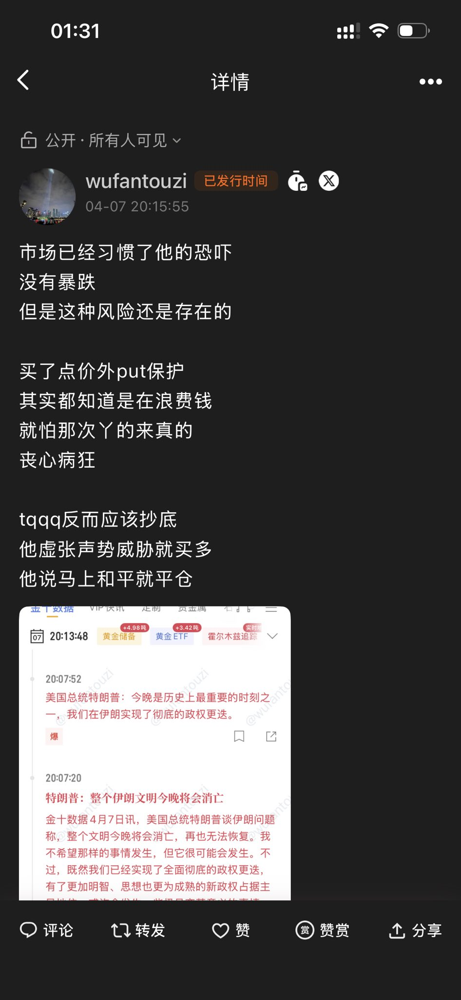

#1 · wufantouzi · 2026-06-09T17:32:30.000Z60天过去了市场依然这个鸟样他们说马上和平了最后一点就开放海峡了市场暴涨马上平多他们威胁马上就要升级战争市场暴跌立即开多
#3 · tothemoonjustin · 2026-06-09T17:53:35.000Z60天过去了。。你的$CRCL已然腰斩了。。Circle Internet Group IncCRCL$64.62+4.31%
#8 · wufantouzi · 2026-07-03T16:01:51.000Zousd这种“夸大虚假宣传”行为恰恰说明了他们做不了做不好稳定币信任才是稳定币的基石你连最基础的信任都不具备怎么让用户把钱交给你然后你给我一个tokencrcl因为这样的新闻大跌了20%随着时间推移会慢慢涨回来的只不过是空头利用的机会真多头也可以利用抢到割肉的带血筹码
#9 · wufantouzi · 2026-07-03T07:38:48.000Z稳定币赛道里当之无愧的龙头肯定是usdt它野蛮生长没有合规身份从0干到2000亿美金如果有机会200亿美金市值买到合规的tether我肯定不会错过但没有如果所以面对crcl不能不动心对于胜率25%还是90%我需要重申可能很对人对此有误解如果按照常规算法只能按照市场占有率去计算它就是24%左右Show more
#10 · wufantouzi · 2026-07-03T07:37:39.000Z根据期望值公式以下其实都是正ev的机会但是要注意下注比例a有1%概率获得1000倍的机会只能配置低于1%不到的仓位b有10%的机会获得100倍的公司可以稍微提高一点仓位c有25%的机会获得50倍的公司已经是凤毛麟角必须要提高配置d有50%的机会获得20倍的机会已经是捡钱了要重仓猛干Show more